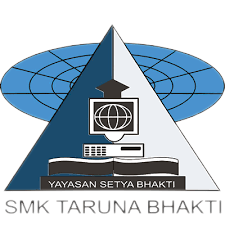

PROFIL
Hi, my name is Muchamad Refly Asmar. I am 22 years old, I have 4 years on IT Staff Experience, such as networking support helpdesk, installing, maintenance and troubleshooting hardware & systems like server, router, switch, wifi, and others. I'm Passionate to have experience in Programming, I already have a course about Front-End Web Developer, Data Analyst, and Data Scientist.
EDUCATION
Vocational High School, March 2013 - May 2016

Three years of vocational high school, choosing a computer and network engineering study program. Understand computer network systems, such as Linux Servers, SQL Database, and Virtual Machine. then study computer network hardware, such as Routers, Switches, Wi-Fi, Modem, and others.
Bachelor Degree, Aug 2016 - Present

Majoring in Information System, currently in the 8th Semester, learn about Basic Programming, Database Management System, Data Analytics, System Analyst, and Bussiness Analytics.
EXPERIENCE
PT. Primajasa Perdanaraya Utama, Sep 2014 - Des 2014 (Internship)
Three Month of Internship, managing network and installing Interconnection between building using Wireless Radio.
Varnion Technology, July 2016 - July 2019
Provide Internet Services to Clients, daily jobdesk installing, maintenance and troubleshooting network clients, consulting network insfrastructure to clients needs.
Mega Hotel Proklamasi & Cikini, Aug 2019 - Present
Managing Hotel Sistem Information Infrastructure, Maintenance, and Troubleshooting Devices, such as Computer I/O, Wifi, Switch, Windows Server, Active Directory, and Hospitality Management Systems (Rhapsody).